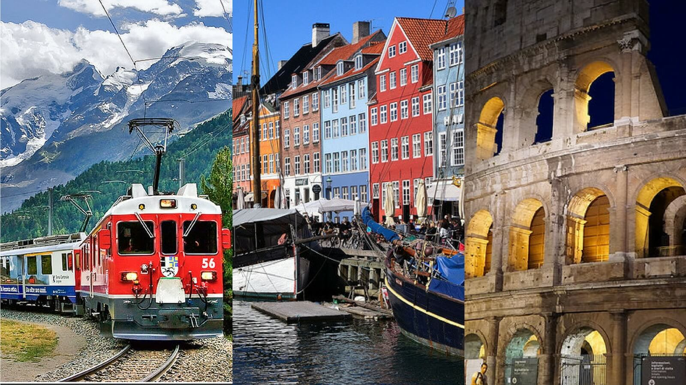

Favourite travel destination: Italy
Each summer since i was 14 my self and my family along with good family friends of our travel to Italy for two weeks.One of the many reason why we love Italy so much is the food.We enjoy endulging in their famous pastries.Also foods such as pizza and pasta.We often stay in a campsite on the outskirts of Rome, which allows us to venture in and out of the city of Rome as we please. My favourite activities to do their are shopping and site seeing.
TOP 10 TOURISTS ATTRACTION

{kind=link}
Would love to visit: Paris
Interailing
This summer myself and two of my friends have decided to go interailing. As you may, or may not know interailing is a ofrm our traveling through Europe with only a backpack. We have decided to go interailing as we have all loved the idea of traveling the but find often it can come at a great expense. Interailing allows you to see many diffent countries, while experiencing many different cultures at half the price. CLICK LINKS---> TOP TIPS FOR PACKING THE BEST ROUTES
